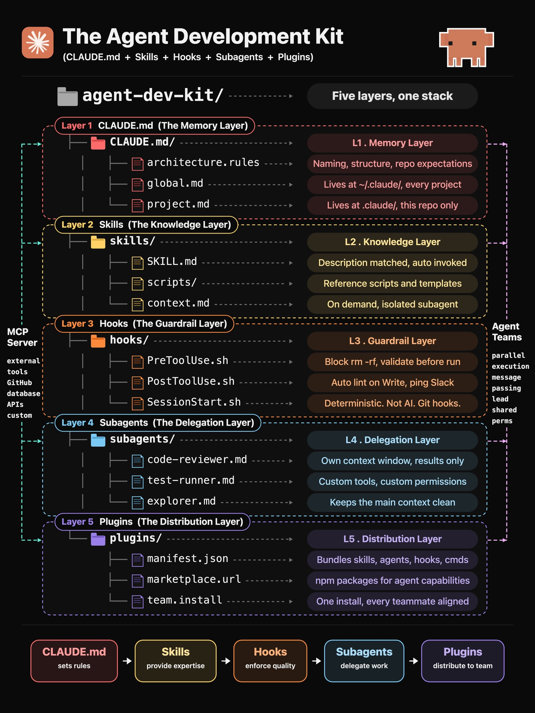
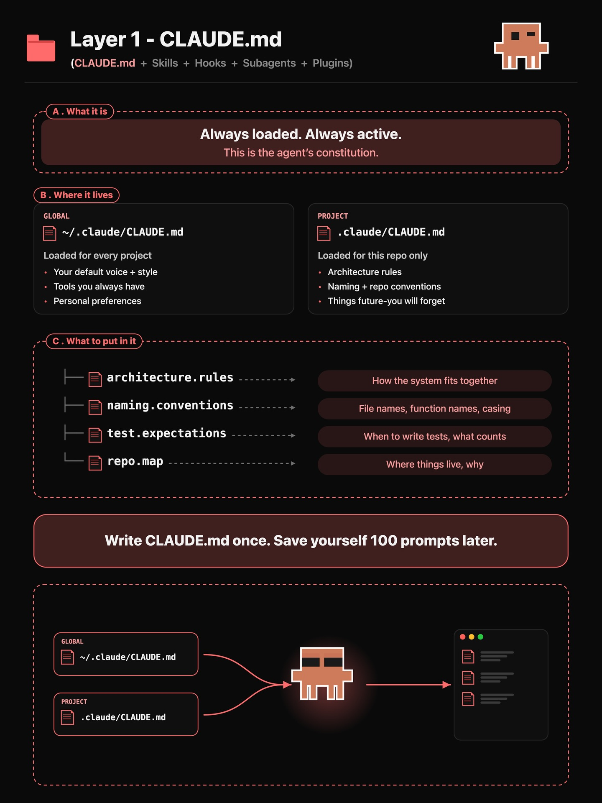
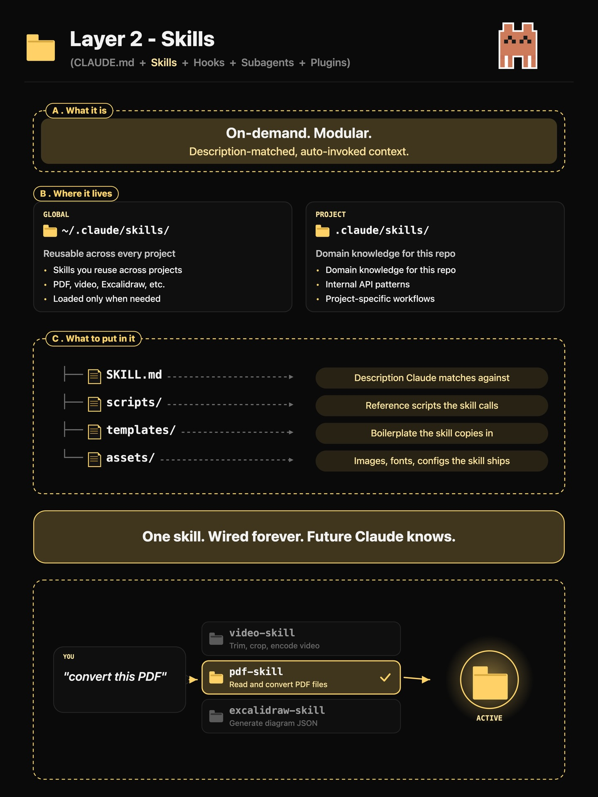
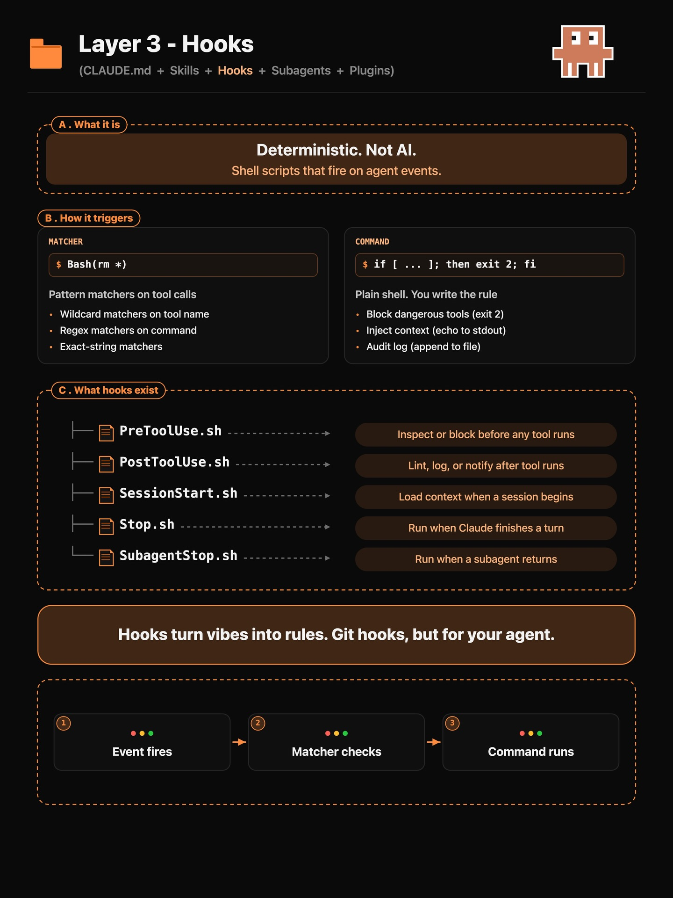
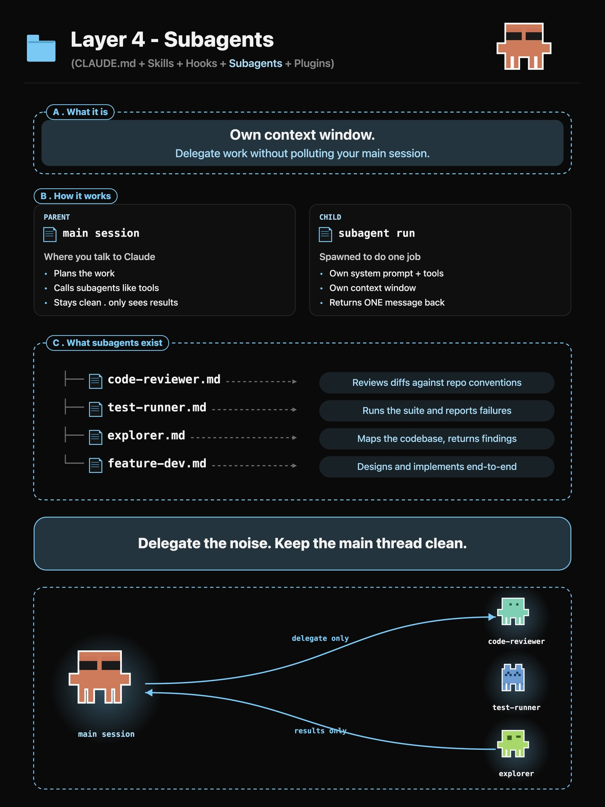
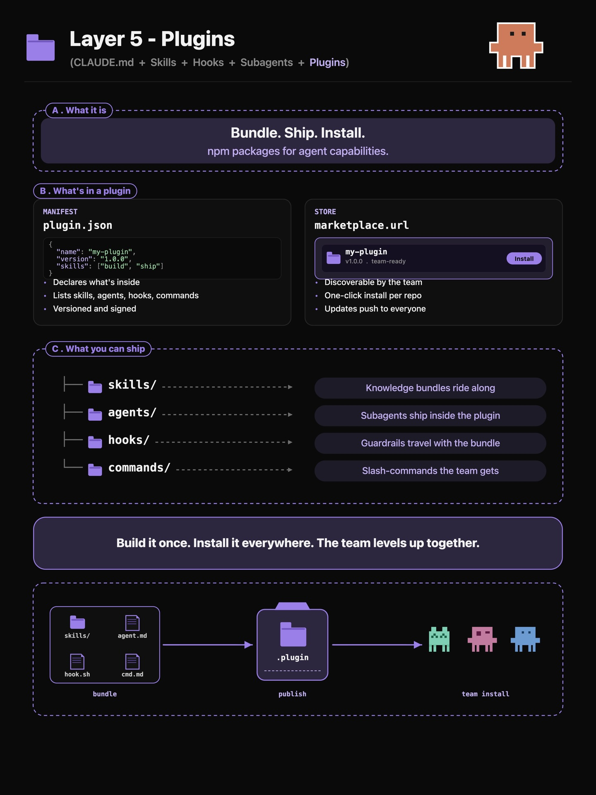

Instagram Post

Most people use Claude Code wrong, and the fix...
carousel (7 slides) (enriched by ClaudeClaw)
Summary
AWESOME-CLAUDE-SKILLS 1 | AWESOME-CLAUDE-SKILLS 1 | AWESOME-CLAUDE-SKILLS 1 | AWESOME-CLAUDE-SKILLS 1 | AWESOME-CLAUDE-SKILLS 1 | AWESOME-CLAUDE-SKILLS 1 | AWESOME-CLAUDE-SKILLS 1
Caption
Most people use Claude Code wrong, and the fix lives in five folders.
CLAUDEmd is the constitution,
skills are the on-demand brain,
hooks are the guardrails,
subagents are the delegation engine,
plugins are how you ship it to your team 🚀
Pick one folder, set it up tonight, and watch your agent stop forgetting things by tomorrow... that’s the whole game. Drop “FOLDER” if you want the full setup.
1
AWESOME-CLAUDE-SKILLS 1. Superpowers: https://lnkd.in/dKp8VwQa 2. Matt Pocock Skills: https://lnkd.in/dR3n-Tzb 3. UI/UX Pro Max: https://lnkd.in/dW9cYmFv 4. Caveman: https://lnkd.in/dh6SgUeq 5. Humanizer: https://lnkd.in/dN2xLrPk 6. Find Skills: https://lnkd.in/dZ4bHjWm 7. Deploy to Vercel: https://lnkd.in/dC7tQaNs 8. Brainstorming: https://lnkd.in/dJ5_PvXr 9. TDD: https://lnkd.in/dB8mKdTy 10. Excalidraw: https://lnkd.in/dY1fRcHu 11. Remotion: https://lnkd.in/dS6wNbGe 12. Web Quality: https://lnkd.in/dEOzMqLj
A list titled "AWESOME-CLAUDE-SKILLS" displays 12 numbered items, each describing a skill or topic followed by a LinkedIn short URL, on a light grey background with a partial orange starburst shape in the bottom right corner.
2
AWESOME-CLAUDE-SKILLS 1. Superpowers: https://lnkd.in/dKp8VwQa 2. Matt Pocock Skills: https://lnkd.in/dR3n-Tzb 3. UI/UX Pro Max: https://lnkd.in/dW9cYmFv 4. Caveman: https://lnkd.in/dh6SgUeq 5. Humanizer: https://lnkd.in/dN2xLrPk 6. Find Skills: https://lnkd.in/dZ4bHjWm 7. Deploy to Vercel: https://lnkd.in/dC7tQaNs 8. Brainstorming: https://lnkd.in/dJ5_PvXr 9. TDD: https://lnkd.in/dB8mKdTy 10. Excalidraw: https://lnkd.in/dY1fRcHu 11. Remotion: https://lnkd.in/dS6wNbGe 12. Web Quality: https://lnkd.in/dEOzMqLj
A numbered list titled "AWESOME-CLAUDE-SKILLS" displays 12 items, each pairing a skill or topic with a LinkedIn short URL, against a light grey background with a partial orange starburst shape in the bottom right corner.
3
AWESOME-CLAUDE-SKILLS 1. Superpowers: https://lnkd.in/dKp8VwQa 2. Matt Pocock Skills: https://lnkd.in/dR3n-Tzb 3. UI/UX Pro Max: https://lnkd.in/dW9cYmFv 4. Caveman: https://lnkd.in/dh6SgUeq 5. Humanizer: https://lnkd.in/dN2xLrPk 6. Find Skills: https://lnkd.in/dZ4bHjWm 7. Deploy to Vercel: https://lnkd.in/dC7tQaNs 8. Brainstorming: https://lnkd.in/dJ5_PvXr 9. TDD: https://lnkd.in/dB8mKdTy 10. Excalidraw: https://lnkd.in/dY1fRcHu 11. Remotion: https://lnkd.in/dS6wNbGe 12. Web Quality: https://lnkd.in/dEOzMqLj
A numbered list titled "AWESOME-CLAUDE-SKILLS" displays 12 items, each pairing a skill or topic with a LinkedIn short URL, against a light grey background with a partial orange starburst shape in the bottom right corner.
4
AWESOME-CLAUDE-SKILLS 1. Superpowers: https://lnkd.in/dKp8VwQa 2. Matt Pocock Skills: https://lnkd.in/dR3n-Tzb 3. UI/UX Pro Max: https://lnkd.in/dW9cYmFv 4. Caveman: https://lnkd.in/dh6SgUeq 5. Humanizer: https://lnkd.in/dN2xLrPk 6. Find Skills: https://lnkd.in/dZ4bHjWm 7. Deploy to Vercel: https://lnkd.in/dC7tQaNs 8. Brainstorming: https://lnkd.in/dJ5_PvXr 9. TDD: https://lnkd.in/dB8mKdTy 10. Excalidraw: https://lnkd.in/dY1fRcHu 11. Remotion: https://lnkd.in/dS6wNbGe 12. Web Quality: https://lnkd.in/dEOzMqLj
A numbered list titled "AWESOME-CLAUDE-SKILLS" displays 12 items, each pairing a skill or topic with a LinkedIn short URL, against a light grey background with a partial orange starburst shape in the bottom right corner.
5
AWESOME-CLAUDE-SKILLS 1. Superpowers: https://lnkd.in/dKp8VwQa 2. Matt Pocock Skills: https://lnkd.in/dR3n-Tzb 3. UI/UX Pro Max: https://lnkd.in/dW9cYmFv 4. Caveman: https://lnkd.in/dh6SgUeq 5. Humanizer: https://lnkd.in/dN2xLrPk 6. Find Skills: https://lnkd.in/dZ4bHjWm 7. Deploy to Vercel: https://lnkd.in/dC7tQaNs 8. Brainstorming: https://lnkd.in/dJ5_PvXr 9. TDD: https://lnkd.in/dB8mKdTy 10. Excalidraw: https://lnkd.in/dY1fRcHu 11. Remotion: https://lnkd.in/dS6wNbGe 12. Web Quality: https://lnkd.in/dEOzMqLj
A numbered list titled "AWESOME-CLAUDE-SKILLS" displays 12 items, each pairing a skill or topic with a LinkedIn short URL, against a light grey background with a partial orange starburst shape in the bottom right corner.
6
AWESOME-CLAUDE-SKILLS 1. Superpowers: https://lnkd.in/dKp8VwQa 2. Matt Pocock Skills: https://lnkd.in/dR3n-Tzb 3. UI/UX Pro Max: https://lnkd.in/dW9cYmFv 4. Caveman: https://lnkd.in/dh6SgUeq 5. Humanizer: https://lnkd.in/dN2xLrPk 6. Find Skills: https://lnkd.in/dZ4bHjWm 7. Deploy to Vercel: https://lnkd.in/dC7tQaNs 8. Brainstorming: https://lnkd.in/dJ5_PvXr 9. TDD: https://lnkd.in/dB8mKdTy 10. Excalidraw: https://lnkd.in/dY1fRcHu 11. Remotion: https://lnkd.in/dS6wNbGe 12. Web Quality: https://lnkd.in/dEOzMqLj
A numbered list titled "AWESOME-CLAUDE-SKILLS" displays 12 items, each pairing a skill or topic with a LinkedIn short URL, against a light grey background with a partial orange starburst shape in the bottom right corner.
7
AWESOME-CLAUDE-SKILLS 1. Superpowers: https://lnkd.in/dKp8VwQa 2. Matt Pocock Skills: https://lnkd.in/dR3n-Tzb 3. UI/UX Pro Max: https://lnkd.in/dW9cYmFv 4. Caveman: https://lnkd.in/dh6SgUeq 5. Humanizer: https://lnkd.in/dN2xLrPk 6. Find Skills: https://lnkd.in/dZ4bHjWm 7. Deploy to Vercel: https://lnkd.in/dC7tQaNs 8. Brainstorming: https://lnkd.in/dJ5_PvXr 9. TDD: https://lnkd.in/dB8mKdTy 10. Excalidraw: https://lnkd.in/dY1fRcHu 11. Remotion: https://lnkd.in/dS6wNbGe 12. Web Quality: https://lnkd.in/dEOzMqLj
A list titled "AWESOME-CLAUDE-SKILLS" displays 12 numbered items, each describing a skill or topic followed by a LinkedIn short URL, on a light grey background with a partial orange starburst shape in the bottom right corner.
All slides




